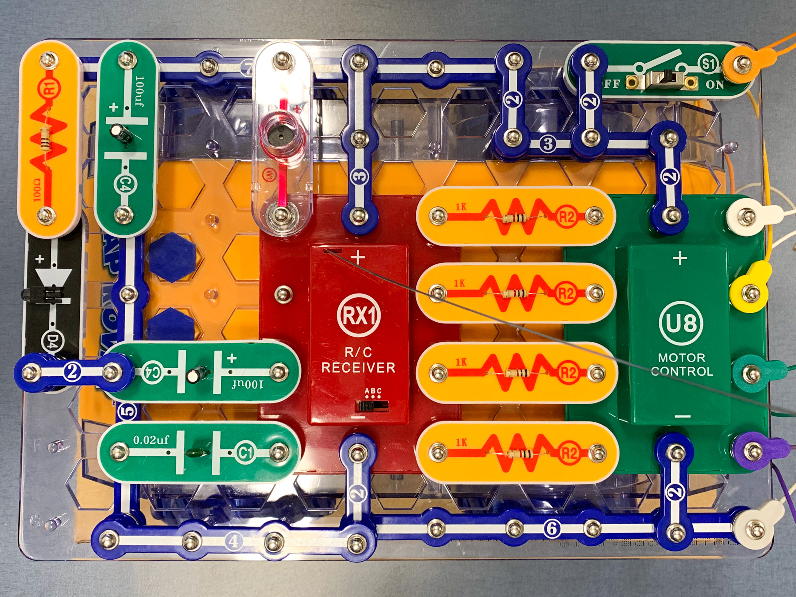

Do It! Snap Circuits Rover: Night Rover
 The Challenge
The Challenge
Your challenge is to use Snap Circuits to build a Night Rover, which is a remote control vehicle that can be driven in the dark. Then see what fraction of “Mars rock samples” your Rover can “collect” in a given amount of time. You will compare the fractions of samples collected on each attempt using the symbols >, =, and <, and illustrate these comparisons using visual fraction models.
Project Steps
-
Build a Night Rover
-
Set Up, Plan, and Predict
-
Collect Mars Rock Samples
-
Additional Predictions and Trials
-
Draw Visual Fraction Models
Build a Night Rover
Use the Snap Circuits Rover Instruction Manual to help you build a Night Rover. The project is located on page 9.
- Secure the grid to the top of the rover.
- Place the components on the grid.
- Attach the wires to complete the circuit.
- Test your rover.
- If your rover does not operate how you expect it, try troubleshooting by testing each piece in the circuit.
Did the rover operate how you expected it to? Can you write step-by-step directions for another student to use to build the rover?

Set Up, Plan, and Predict
Now that you have a functioning Night Rover, you are going to simulate collecting samples. (In this case you will simply drive over or drive into each sample, depending on what kind of object you chose to represent the samples.) Since Mars has rugged terrain, a real Mars Rover engineer would plan out the rover’s driving route to ensure that it finds the safest path to carry out its mission for the day.
- First, figure out where you will do your sample collecting. Will you set your “samples” out in various parts of the lab? Is there another space you should use? Talk to your facilitator about where you will do your project.
- One partner should set eight “Mars rock samples” in various locations around the space. These “samples” could be as simple as sticky notes, but since they will represent fractions of a whole, they should all be identical in size and shape.
- The other partner will do a “test drive”. See how long it takes to drive to all eight samples. (Plan to take a video of this maiden voyage and at least one other attempt at the driving challenge.) When you do your real sample collecting, you will want to give yourselves a challenging amount of time, so that you may or may not be able to collect all of the samples. So if it takes 1:15 minutes to reach all 8 samples, you may want to give yourselves 45 seconds during the actual sample collecting. (This is for fun and to make the math a little bit more challenging.) Record this time limit next to “1st Terrain Set Up” in the Mars Rock Sample Collection Comparison document.
- Now, both partners should think about the best path for the rover to follow in order to collect the greatest number of samples in the given time (45 seconds in this example.) Since you will each take a turn, you can each plan separately.
- Predict how many samples you can collect in the given amount of time and record your predictions in the 1st table in the Mars Rock Sample Collection Comparison document. Be sure to write your prediction in fraction form. For example, if you think you can collect 4 of the 8 samples in 45 seconds, write down 4/8 rock samples. Compare your predictions using a comparison symbol, >, =, or <.
Collect Mars Rock Samples
It is time for your sample collection trials. Take turns collecting as many samples as you can in the given time. If your facilitator allows it, you can even turn out the lights since your Night Rover is equipped to complete its mission in the dark.
1st Terrain Set Up:
- Before you turn out the lights, be sure to document the terrain by photographing the space. Take as many photos as you need to record the locations of all the Mars rock samples. Find a way to notate that these photos are all a part of the 1st set up.
- Make sure your predictions are recorded in the 2nd and 3rd tables so you can compare these fractions to the fraction of samples you actually collect.
- One partner should handle the stopwatch while the other partner does the collecting.
- When time is up, record the number of samples collected in fraction form (e.g. 6/8 rock samples) under Partner 1, 1st Attempt. Then, compare the prediction to the actual attempt using a comparison symbol, >, =, or <.
- Place all rock samples back in their original locations. If you are unsure, refer to your photographs.
- Switch roles so that the other partner gets a chance to collect samples.
- Record the number of samples in fraction form under Partner 2, 1st Attempt. Then, compare the prediction to the actual attempt using a comparison symbol, >, =, or <.
- Now that you have each made your 1st attempt, problem-solve together to see if you can come up with a more efficient path for the rover. Working as a team, can you find a route that would allow you to collect even more samples in the given amount of time? Take turns testing out your new path. Be sure to record the fraction of samples from this 2nd attempt in your Comparison Chart in tables 4 and 5.
Additional Predictions and Trials
Conduct at least one more set of trials with a new terrain set up, but feel free to do more if you have time. The partner who did the test drive for the first set of trials should now set the Mars rock samples in new places. The partner who set up the previous samples will get to do the test drive this time. Follow the steps in the previous section to complete this new set of trials.
Draw Visual Fraction Models
Now that you have collected data from your multiple trials, choose three comparisons to illustrate as visual fraction models. The comparisons can all be from the same terrain set up or from different set ups. You can draw individual shapes and shade the correct number of shapes, or you can draw single shapes and divide them into equal parts. Just be sure to label them with the fractions in number form, and include comparison symbols so that it is clear what fractions the models represent.